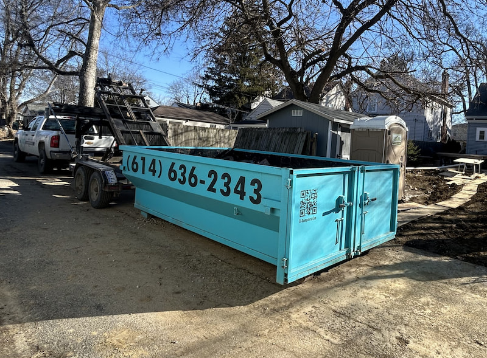

Live Load Dumpster Service Explained
Most people think of dumpster rental as a multi-day arrangement—drop it off, fill it at your own pace, pick it up later. Live load is different. The truck stays. You load. We haul it away the same visit. Here's exactly how it works and when it's the right call for your project.

A homeowner in Upper Arlington called me after a bathroom remodel wrapped up last fall. The contractor had done good work but left behind what always gets left behind—scrap drywall, old tile, packaging from the new vanity, the demolished tub surround, and a pile of miscellaneous debris that had accumulated over two weeks of work.
"I don't need three days," she told me. "This stuff is already sorted and stacked in the garage. I just need it gone. Today."
She was a perfect candidate for a live load.
I told her how it worked: I'd show up with the truck and dumpster, stay on-site while she loaded everything, and haul it away the same visit. No multi-day rental. No dumpster sitting in her driveway for three days. One trip, one hour, done.
"Why didn't anyone tell me this was an option?" she said.
Fair question. Live load isn't something most people know to ask about—but for the right project, it's often the better choice. Here's everything you need to know.
What Is a Live Load?
A live load is a dumpster rental where the truck stays on-site while you load it.
With a standard rental, I drop off an empty dumpster, you fill it over your rental period (3+ days), and I come back to pick it up when you're done. You control the pace and the timeline.
A live load flips that arrangement. I arrive with the truck and dumpster. You load while I wait. When you're done—or when your hour is up—I haul it away immediately. The dumpster never sits on your property overnight.
Live Load at a Glance
How it works: Truck and dumpster arrive on-site. You load. We haul away the same visit.
Time window: 1 hour from arrival to haul-away
Price: $279 + 8% Ohio tax = $301.32 total ($20 less than a standard 3-day rental)
Weight limit: Up to 4,000 lbs—same as the standard rental
Best for: Quick cleanouts, post-renovation debris, and situations where you don't need a dumpster sitting for days
How a Live Load Works: Step by Step
Here's exactly what happens from the moment you book to the moment we're done.
Step 1: Book by Phone
Call (614) 636-2343 to set up a live load. We'll talk through your project, confirm you're a good fit for the service, and schedule an arrival time. Live loads need a quick conversation before booking—I want to make sure the service actually makes sense for what you have.
I'll ask about your project: what type of debris, roughly how much, and where I'll be parking the truck. This lets me show up prepared and flag any potential issues before we get there.
Step 2: Prepare Before I Arrive
This is the most important part of a successful live load, and I can't stress it enough: everything needs to be sorted, staged, and ready to load before the truck arrives.
Your one-hour window starts when I pull up. If you spend the first 20 minutes sorting through boxes or deciding what goes, you're burning your loading time. The most efficient live loads I've done happen when the customer has already done the organizing—the actual loading is the easy part.
More on preparation below.
Step 3: I Arrive and Set Up
I show up with the truck and dumpster, position everything where we discussed, and put down protection boards if we're working on a driveway. I'll give you a quick rundown of the dumpster—how to use the swing-open rear door, fill level limits, what the prohibited items are—and then we get started.
Step 4: You Load, I'm On-Site
This is where you do the work. You and whoever you've brought to help carry items out and load them into the dumpster. I'm on-site the whole time—not hovering, but available if you have questions about a specific item or need anything.
Use the rear door for heavy or bulky pieces. Flat items go on the bottom. Fill gaps with smaller debris as you go. Same loading principles as any dumpster—you just have a time clock running.
Step 5: Haul-Away
When you're done loading—or when the hour is up—I close up the dumpster and haul everything away on the spot. Your property is clear. No waiting for a pickup call. No scheduling a return visit. Done.
The 1-Hour Window: What That Really Means
One hour sounds like a tight window, and for some projects it is. But for the right situation, it's more than enough—and here's the key insight: if you've done the prep work before I arrive, loading goes fast.
Think about it. Moving a pile of sorted, staged renovation debris from a garage into a dumpster is mostly physical labor. With a couple of people working efficiently, you can move a significant amount of material in an hour. Post-renovation debris, a cleaned-out garage, a room's worth of junk that's already sorted—these load quickly when everything is ready.
Where people run into trouble is when sorting and loading happen at the same time. Going through boxes, making keep-donate-trash decisions, hunting for items in disorganized spaces—that's time-consuming. Do that work before I show up.
What If You're Not Done at the Hour Mark?
Call me when you book and let's talk through the volume honestly. If it sounds like your project is going to be close to the limit, I'd rather tell you upfront that a standard 3-day rental might give you more breathing room. I'd much rather set you up with the right service than have you feel rushed through a live load.
If you genuinely underestimated how much you had and we hit the hour, we'll talk through options—but the goal is to avoid that situation entirely with an honest conversation at the start.
How to Prepare for a Live Load Appointment
Your prep work makes or breaks a live load. Here's exactly what to do before the truck arrives.
Sort Everything Before Arrival Day
Go through your space and make every keep-donate-trash decision before the appointment. Set aside what's going in the dumpster, separate it from anything you're keeping or donating, and pull out any prohibited items for separate disposal.
If you find yourself still making decisions when I'm standing there with the truck running, you'll feel rushed and frustrated. Do the thinking ahead of time so the appointment is nothing but loading.
Stage Debris Near the Loading Area
Move everything you're throwing away as close to where the truck will park as possible. The shorter the distance between your staging pile and the dumpster, the faster the loading goes.
If debris is scattered through multiple rooms, consolidate it into one area first—ideally the garage, a back hallway, or anywhere near where I'll be positioned. One centralized pile is far more efficient than items spread across the house.
Separate Prohibited Items in Advance
The prohibited items list for a live load is the same as a standard rental—liquid paint, aerosols, refrigerant-containing appliances, batteries, tires, hazardous chemicals, asbestos. During a live load, there's no time to stop and research whether something can go in.
Pull those items before I arrive and set them aside for separate disposal. If you're unsure about something specific, call me the day before the appointment and I'll tell you right away.
Confirm Truck Access
The delivery truck is a full-size roll-off vehicle. It needs room to position the dumpster within reasonable reach of your debris. When we talk on the phone, I'll ask about access—driveway, street, alley—and we'll sort out the logistics before I show up.
If there are overhead obstacles, tight clearances, or anything unusual about your property, mention it when you book. Better to sort that out in advance than discover it when we're on-site.
Have Help Ready
A live load goes much faster with extra hands. If you have a friend, family member, or contractor who can help carry items to the dumpster, the hour feels generous. If you're working alone, make sure everything is staged close enough that you're not making long trips back and forth.
Live Load vs Standard Dumpster Rental
Here's a direct comparison to help you decide which service fits your situation.
| Factor | Live Load | Standard Rental |
|---|---|---|
| Time window | 1 hour on-site | 3 days (extensions available) |
| Truck stays on-site | Yes—hauls away same visit | No—separate delivery and pickup |
| Dumpster on your property | 1 hour or less | 3+ days |
| Price | $279 + tax = $301.32 | $319 + tax = $344.52 |
| Weight limit | 4,000 lbs | 4,000 lbs |
| Prep required | High—must be ready before arrival | Low—sort and load at your own pace |
| Best for | Quick cleanouts, post-renovation debris, limited placement options | Multi-day renovations, ongoing debris, working at your own pace |
When to Choose a Live Load
Post-Renovation Debris Removal
Your contractor finished the job. The space looks great—but there's a pile of construction debris sitting in the garage that needs to be dealt with. Scrap lumber, packaging, old fixtures, demolished materials. The project is done. The debris is just sitting there.
This is a perfect live load scenario. The debris is done accumulating. It's sorted. It's ready. You just need it gone, and you don't need a dumpster in your driveway for three days to get there. One visit, one hour, cleared.
Quick Cleanouts Where Everything Is Already Ready
You've spent the past week sorting through the garage, the basement, or a spare room. You know exactly what's going and what's staying. The "throw away" pile is already organized and waiting.
This is where a live load shines. The hard work—the decision-making—is already done. The loading itself is physical but fast when you're prepared. A live load gets it out the same day without a multi-day rental you don't actually need.
You Don't Have a Good Long-Term Placement Option
Not every property has an ideal spot for a dumpster to sit for three days. Maybe you're at a townhouse with limited space, a rental property where you can't block the driveway for an extended period, or a situation where a multi-day dumpster just isn't practical.
A live load removes that obstacle. The dumpster is there for an hour, not three days. If the logistics of long-term placement have been a sticking point, live load solves it.
When NOT to Choose a Live Load
Live load isn't right for every project. Here's when a standard rental is the better call.
You're Still Sorting Through Everything
If you haven't done the pre-work—if you're still making decisions about what to keep and what to throw away—a live load will feel rushed and stressful. That's not a good experience, and honestly it's not a good use of your money either.
Standard rental gives you time to sort through your space at your own pace, make thoughtful decisions, and load as you go. If you're not ready to load the moment I arrive, book a standard rental.
Your Project Generates Debris Over Multiple Days
If you're doing a renovation, demo, or cleanout that spans several days—debris accumulating as work progresses—a live load isn't going to work. You need a container on-site that you can fill throughout the project.
A standard rental with a 3-day (or longer) window is built for this. The dumpster sits in your driveway, your contractor throws debris in throughout the project, and I pick it up when the work is done. That's exactly what the standard rental is designed for. See our guides on kitchen and bathroom remodels and roofing projects for how that works in practice.
You Have More Than a Live Load Can Handle
If you have any doubt about whether you can load everything in an hour, be honest with yourself before booking. An overestimated live load turns into a stressful race against the clock—and if you hit the limit with material still left over, you're back to scheduling another service.
Call me and describe what you have. If it sounds borderline, I'll tell you, and we'll figure out whether a live load or a standard rental is the right move for your specific situation.
Pricing
$279 + 8% Ohio tax = $301.32 total.
That's $21.60 less than the standard 3-day rental. You save a little money, and more importantly, you save the hassle of a multi-day rental you don't actually need.
Live Load Pricing Details
Base price: $279
Ohio sales tax (8%): $22.32
Total: $301.32
Includes: Truck on-site for up to 1 hour, 14-yard dumpster, up to 4,000 lbs of debris, haul-away same visit, driveway protection boards
Weight overage: $0.03 per pound over 4,000 lbs
Same prohibited items as a standard rental, same driveway protection, same 14-yard dumpster. The only difference is the timeline—you're loading in one session instead of over multiple days.
Is a Live Load Right for Your Project?
Live Load Is a Good Fit If:
- Your debris is already sorted and ready to load
- You can realistically load everything in under an hour
- You don't need or want a dumpster on your property for multiple days
- Your project is done generating debris—you just need it hauled away
- You have people ready to help load when the truck arrives
Standard Rental Is a Better Fit If:
- You're still sorting through items and need time to decide what goes
- Your project generates debris over multiple days
- You're working with a contractor who'll load throughout a renovation
- You're not confident you can load everything in an hour
- You want to work at your own pace without a time constraint
Booking a Live Load
Live loads are booked by phone—call (614) 636-2343 and we'll talk through your project. I want to make sure a live load is actually the right service before we schedule anything. If a standard rental would serve you better, I'll tell you that.
That homeowner in Upper Arlington who called after her bathroom remodel? She was perfectly prepared. The debris was already staged in the garage by the time I arrived. We were done in under 45 minutes, her garage was clear, and she didn't have to deal with a dumpster sitting in her driveway through the weekend.
"Why didn't anyone tell me this was an option?" she said—and that's exactly why I'm writing this.
Live load is the right answer for more situations than most people realize. If you've got a project where everything is ready to go and you just need it hauled away, one visit is all it takes.
Serving Dublin, Hilliard, Powell, Upper Arlington, Worthington, Plain City, and the greater Columbus area.